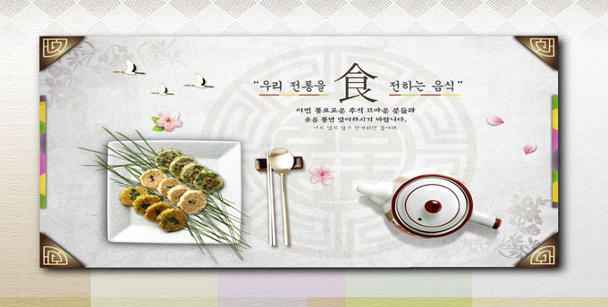
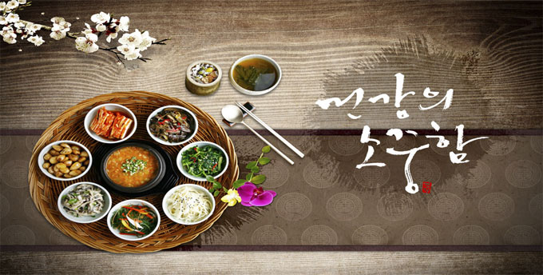
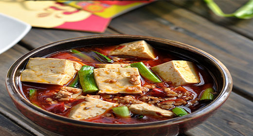
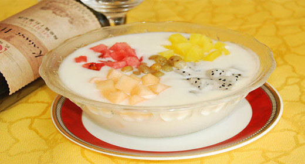
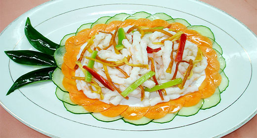
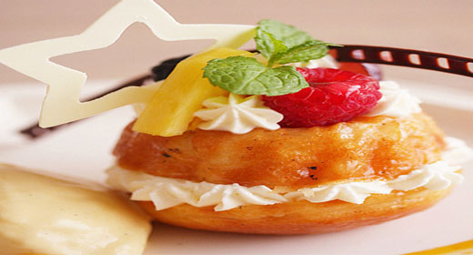
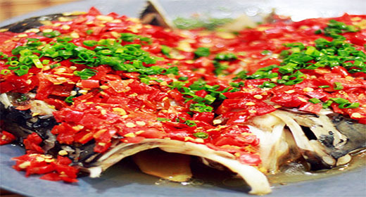

首页
营养专栏
健康专栏
论坛交流
热门话题
我的账户
营养专栏:
多动症儿童的饮食营养策略 导致胃热的食物应少吃
考生吃什么可以缓解紧张疲劳？
如何优化宝宝基因？
中学生时期的特殊饮食营养需要


功能营养
喝酒后吃这九种食物帮你快速解酒
冬季必吃的五种暖身滋补蔬菜
寒冷冬季吃什么食物驱寒抗寒
女人吃什么滋阴补肾 滋阴补肾食物
基础营养
补充蛋白质有助于儿童长高
矿物质对头发的美容保健作用
增加膳食纤维摄入有哪些办法
富含碳水化合物的食物有哪些





<
>
减肥营养
16种清肠排毒食物告别小肚腩
吃什么减肥 减肥效果最好的12种食物
减肥瘦身多吃六种蔬菜补充维生素
让您健康减肥成功的科学饮食秘籍
美容营养
4种最天然美肌食物 拥有洁白无瑕的肌肤
冬季皮肤干燥怎么办 喝汤吃水果补湿
过量食用这6种食物会变成丑八怪
三种最有效的抗衰老食品 大蒜抗老防癌
营养食物
喝牛奶错误的方法 教你正确喝牛奶
鸡蛋吃法排行榜告诉你怎样吃最营养
盘点吃红枣的七大好处 补脾补血
如何鉴别松花蛋(皮蛋)好坏